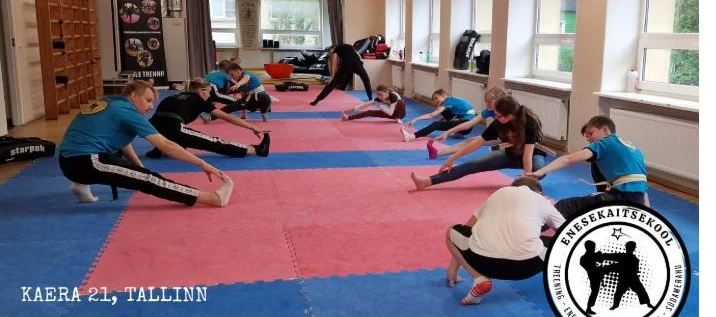

Turvaline enesekaitse õpe
Treeningutel räägime ja loome selged piirjooned turvaliseks õppeks.
Taktikaline enesekaitse / Krav maga
Pakume lastele vanuses 5–14 a suurepärast võimalust õppida enda eest seisma, keerulisi olukordi lugema ja õigeid valikuid tegema. Uued lapsed on oodatud tasuta proovitrenni.
Kaera 21, Tallinn • Tulge julgelt proovima

Registreerumiseks saada kiri aadressile enesekaitsekool@gmail.com — kirjuta lapse nimi, vanus ja oma telefoninumber. Soovitame rühma ja leiame aja.
Mida laps õpib
Enesekaitsekooli treening ühendab turvalises keskkonnas enesekaitseõppe läbi aktiivse liikumise ja mängulisuse, oskuse end selgelt väljendada ja olukordade taktikalise lugemise, andes lapsele oskused nii olukorra rahustamiseks kui ka enda füüsiliseks kaitsmiseks. Laps õpib hindama, kellega ja kus on tekkinud arusaamatus, olgu selleks sõbralik haare, koolikiusu situatsioon või otsene rünnak täiskasvanu või mitme inimese poolt. Kõik algab aga tähelepanelikkusest ja valmisolekust.
Enesekaitsekool on Eesti Krav Maga Akadeemia lastele suunatud programm.
Treeningutel räägime ja loome selged piirjooned turvaliseks õppeks.
Pigem lihtsasti omandatavad lahendused olukordadeks, mis lapsega päriselt juhtuda võivad. Meil on väga lai baas õppematerjali, mis on kohandatud lastele eakohaselt.
Aktiivne ning energiline trenn, mis arendab lapse kehalist liikumist ja tasakaalu, koordinatsiooni ja vastupidavust.
Treeningrutiini sissejuurutamine, fookuses püsimine ja enda arengule pühendumine.
Lapsed harjutavad individuaalselt, paarides ja rühmades. Trennis leiab laps uusi sõpru ning harjub treenima nii vanemate ja nooremate kui ka poiste ning tüdrukutega.
Enesekindel laps tajub mida teha, sest ta on harjutanud, situatsioone läbi mänginud ja keha suudab automaatselt õigeid otsuseid vastu võtta. Laps harjub eakohasel määral stressi all tegutsema, et vajalikul hetkel külmumist ei tekiks ja pea selge püsiks.
Treeningust
Enesekaitsekooli treening on aktiivne ja mänguline, lõbus ja praktiline. Enesekaitse kui temaatika tuleb teha nauditavaks ning lapsel peab olema tunne, et ta ei ole kuidagi ohustatud.
Esimene reegel on alati terveks jäämine – trennikaaslane on sinu abiline, mitte keegi kelle peal end välja elatakse. Iga laps areneb oma tempos, meie eesmärk on stabiilne teadmiste ja oskuste areng, mitte üksteise ületrumpamine või teise peal oskuste näitamine. Paneme palju rõhku ohutusele ja tänu sellele juhtub ka traumasid ja õnnetusi ülimalt harva. Selle saavutame läbi oma turvalise treeningmetoodika, mida järgime ka täiskasvanute treeningutel.
Treeningu sisu muutub koos lapse vanuse ja valmisolekuga.
Meie suur eesmärk on alati olnud see, et laps ise soovib trennis käia, omal initsiatiivil mitte vanema survel.
Lapsevanem võib alati treeningut vaadata, samuti lapsega koos kaasa teha, kui see mõnel tungival põhjusel vajalik on. See tuleks enne trenni algust instruktoriga läbi rääkida. Esimeses trennis on kindlasti hea, kui lapsevanem pigem olemas on. Alati võib küsida lapse käekäigu kohta, sest meie ja teie eesmärk on ühine – hoitud ja enesekindel laps.
Enesekaitse, mitte võitlussport
Treening arendab olukorrateadlikkust, selget häälekasutust ja ohust turvalise eemaldumise oskusi. See aga ei tähenda, et laps ei tohi jõudu kasutada. Tuleb mõista mis on füüsiline vägivald, liigne jõukasutus aga ka mis on vajalikul määral enesekaitse. Kui on selge tunnetus, et ollakse ohus, tuleb teatud situatsioonides esimesena tegutseda, seda kõike nad ka treeningutel õpivad.
Valju häälega piiride seadmine, enesekindel kehakeel ning efektiivne liikumine loovad enesekaitse aluspinnase. Hääl muudab olukorra ka avalikuks ja toob tähelepanu alla, kuid seda tuleb selgelt harjutada, et hääl ka stressi all välja tuleks.
(Kooli)kiusamine on raske teema, mille ohvriks ei soovi langeda keegi, kuid mida esineb palju. Enesekindlat last on raske kiusata, sest üldjuhul on kius eskaleeruv metoodiline tegevus. Kuna arvestame, et meie juures võivad olla ka lapsed keda on juba varem kiusatud, siis saame aidata lapsel läbi treeningu sellest paraneda.
Laps õpib tegutsema väga otsekoheselt – olukorra kiire analüüs, vajalik tegutsemine, situatsioonist kohene lahkumine. Seejärel juba ohu võimaliku edasikestmise tajumine, ümbruse skaneerimine ja abi otsimine.
Saalid ja ajad
Treeningud toimuvad Tallinnas, Kaera 21.
| Vanus | Kell |
|---|---|
| 5–9 a | 18.00 – 19.00 |
| 10–14 a | 19.00 – 20.00 |
| Vanus | Kell |
|---|---|
| 5–9 a | 10.10 – 11.10 |
| 10–14 a | 11.15 – 12.15 |
Trennid võivad nihkuda 5–10 minutit üle, sõltuvalt trennipäeva materjalist.
Hinnad
Treeningkorra arvestame maha ainult osaletud treeningu alusel, selleks kasutame saalis trennikaarte, kuhu märgime osalused — ise kaasas kandma midagi ei pea. Laps peab enne trenni end instruktorile registreerima. Mitme lapsega perele on soodustused, samuti arvestame soodustuse alla täiskasvanud pereliikmed, kes meie täiskasvanutega treenivad.
1 treeningkord tutvumiseks.
5 treeningkorda. Kahe pereliikme osalemisel 45 €, kolme pereliikme osalemisel 40 €. 5x kaart ei ole mitme lapse vahel jagatav.
10 treeningkorda. Kahe pereliikme osalemisel 82 €, kolme pereliikme osalemisel 75 €. 10x kaardi treeningkordi saab jagada kuni 2 lapse vahel.
25 treeningkorda. Kahe pereliikme osalemisel 190 €, kolme pereliikme osalemisel 180 €. 25x kaart on ühele lapsele ning ei ole pereliikmete vahel jagatav. Eelkõige pika pühendumisega lapsele.
Eesti Krav Maga Akadeemia MTÜ
EE56 4204 2786 3383 3906
Selgitus: lapse täisnimi, 5x, 10x või 25x
Summa: vastavalt osalevate pereliikmete arvule ja valitud kaardile
KKK
Kirjutage enesekaitsekool@gmail.com ja saatke lapse täisnimi ja vanus, registreerime ta ära. Proovima saab alati tulla kui treening toimub.
Treeningud toimuvad Tallinnas, Kaera 21.
Lapsele võib panna tavapärase sees treenimise riietuse, peaasi et tal endal on mõnus ja mugav. Treenime tavapäraselt paljajalu või sokkis.
Ei, laps võib tulla igasuguse varasema kogemuseta.
Krav Maga on Iisraeli päritolu taktikaline enesekaitsesüsteem, mis on algselt välja arenenud läbi vajaduse anda inimesele tänavalt praktilised oskused enda eest seismiseks. Krav Maga ei ole sport vaid süsteemne lähenemine et jääda terveks, et jääda ellu. Täiskasvanud õpivad toime tulema ka relvarünnakute vastu; lastetreeningutel relvi me loomulikult ei kaasa ja materjal on eakohane.
Kuna me ei õpeta last ainult võitlema, siis on meie enesekaitsetrenn suurepärane õpe ka kiusamise vastu.
Lapsevanem võib alati kohapeal olla.
Varustust kasutame, loomulikult uue lapse korral tuleks kõigepealt treenida ja saada aru, kas see on trenn mis võiks pikaajaliselt sobida.
Esimeses järjekorras: kubemekaitse, säärekaitsmed, poksikindad, hambakaitsmed. Teises järjekorras: turvakiiver ja vest.
Varustus annab võimaluse praktiseerida materjali, mida oleks ebamugav ja mitte turvaline ilma harjutada ning ka kontaktsemalt treenida, näiteks läbi sparringu. Sparring ei tähenda otseselt teise alistamist, vaid kontaktvõitlusega harjumist ja õpitu loovat rakendamist; kedagi ei suunata sparrima ilma piisava kogemuseta. Meie metoodika on üles ehitatud selliselt, kus suurema kogemusega treenija alati kohandub väiksema kogemusega treenija vajadustega, mis tagab et kõik treenivad, õpivad ja arenevad.
Meie koostööpartnerid varustuse osas on Budopunkt ja Knockout. Mõlemad pakuvad 10% soodustust (online ja kohapeal) meie isikliku sooduskoodi alusel — selle saate meilt küsida.
Kaera 21 hoovi lubatakse parkida ainult maja personalil ning instruktoritel. Lapsevanem saab parkida:
Pelgulinna Selveri parkla – 2 h. Aru tänav – tasuta. Tänaval maja ees – 15 min (lapse toomiseks ja viimiseks).
Saada kiri lapse täisnime ja vanusega. Soovitame rühma ja leiame aja.